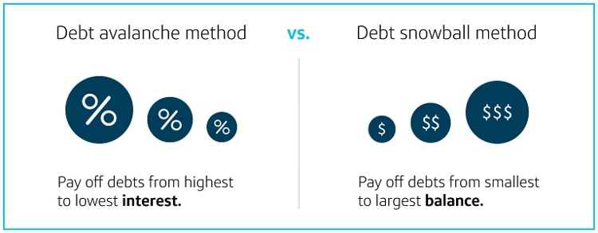
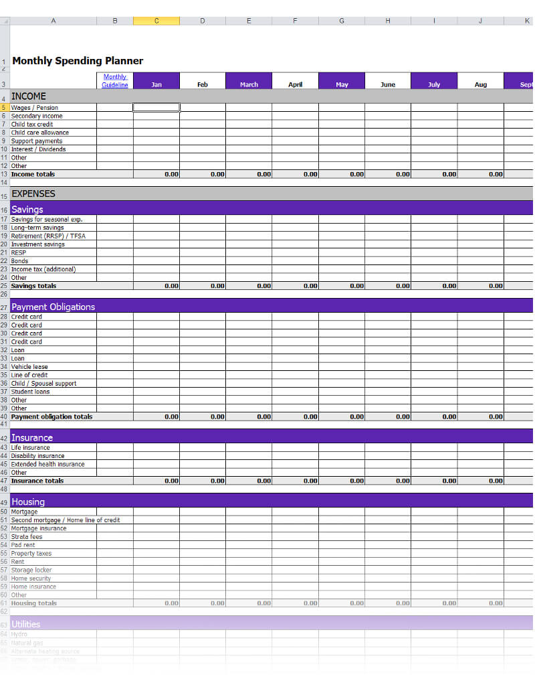

How to become Financially Free?
-- Abhi Sawant
About Me
Abhi Sawant
ex-IIT
ex-Yahoo!

ex-Samsung (South Korea)
ex-Mindseed


ex-Flipkart

ex-Amazon (Seattle, USA)

registered my own software development company in 2014
why does all this matter to you?
Financially Independent, Retired Early
achieved FIRE in Dec-2024, at the age of
42
passionate about sharing my learnings to help everyone become "Financially Independent"
"Retiring Early" is optional
NOT a Financial Advisor
FI Novice
as simple as
passive income >> expenses
buy low, sell high
increase income
work harder
work smarter
-- upskill
-- network
-- etc
decrease expenses
focus on needs
-- food, clothing, shelter, medical needs
-- education (for both kids, and self)
reduce wants
-- don't eliminate completely, else what's life for
-- entertainment, social status
do not buy on credit card if cannot pay in full at EOM
FI Intermediate
Eliminate Loan

Eliminate Loan ...

Increase Savings
pay yourself first
automate
start with 10% savings
improve lifestyle at a lesser rate than increase in pay
slowly, increase savings %
Tracking and Budgeting
Tracking
Tracking and Budgeting ...
Tracking ...
use apps like AndroMoney, EveryDollar, Expensify, Fuelio, Mint, and many more
excel sheets, google sheets, are most flexible
more than the tool, you need discipline
track for a few months before you go to next steps
Tracking and Budgeting ...
Budget

Tracking and Budgeting ...
Balance sheet
Tracking and Budgeting ...
Cashflow statement
Tracking and Budgeting ...
Rinse and Repeat
create budget, balance sheet and cashflow statements a few times
needs+wants v/s savings needs to stabilize
more than the tool, you need discipline
Tracking and Budgeting ...
most importantly
remember
life is not an excel sheet
have fun!
FI Advanced
Insurance
do NOT confuse insurance and investment
stay AWAY from ULIPs at all cost
term insurance is MUST
emergency fund is MUST
health insurance is important
Good v/s Bad Debt
Good:
very long term
low interest rates
tax benefits, etc
Bad:
short term
high interest rates
not paying credit card balance in FULL, EVERY MONTH is WORST
Investing for Passive Income
passive income >> expenses
Investing for Passive Income ...
multiple investments based on timelines of needs

longer timeframe == higer risk
Investing for Passive Income ...
stock trading is NOT investment
also, it is a full time job
do not do it if you don't have time and passion
Investing for Passive Income ...
Other modes of investment:
Fixed/Recurring Bank Deposits
Mutual Funds
Real Estate, etc
Define your target number

In Closing
Summary
4 most important things are
passive income >> expenses
improve lifestyle at a lesser rate than increase in pay
more than the tool, you need discipline
automate
actually, there's 1 more thing that is even more important
life is not an excel sheet; have fun!


skipped more advanced topics like:
buffers
ETFs
risk management
portfolio management
etc

for personalized guidance, contact h2w2.life@gmail.com